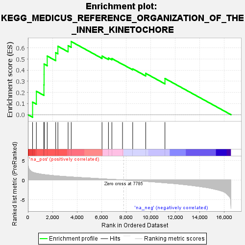
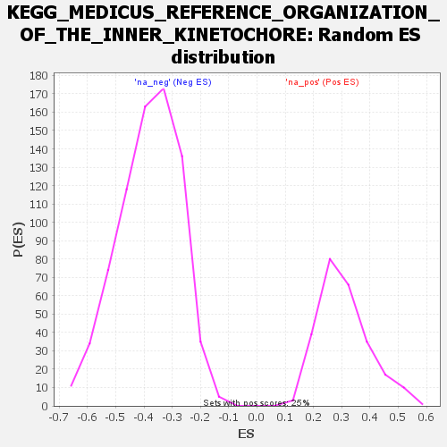

| | | Dataset | all_genes |
| Phenotype | NoPhenotypeAvailable |
| Upregulated in class | na_pos |
| GeneSet | KEGG_MEDICUS_REFERENCE_ORGANIZATION_OF_THE_INNER_KINETOCHORE |
| Enrichment Score (ES) | 0.6575054 |
| Normalized Enrichment Score (NES) | 2.1186948 |
| Nominal p-value | 0.0 |
| FDR q-value | 0.047138702 |
| FWER p-Value | 0.02 |
Table: GSEA Results Summary

Fig 1: Enrichment plot: KEGG_MEDICUS_REFERENCE_ORGANIZATION_OF_THE_INNER_KINETOCHORE
Profile of the Running ES Score & Positions of GeneSet Members on the Rank Ordered List

Fig 2: KEGG_MEDICUS_REFERENCE_ORGANIZATION_OF_THE_INNER_KINETOCHORE: Random ES distribution
Gene set null distribution of ES for KEGG_MEDICUS_REFERENCE_ORGANIZATION_OF_THE_INNER_KINETOCHORE